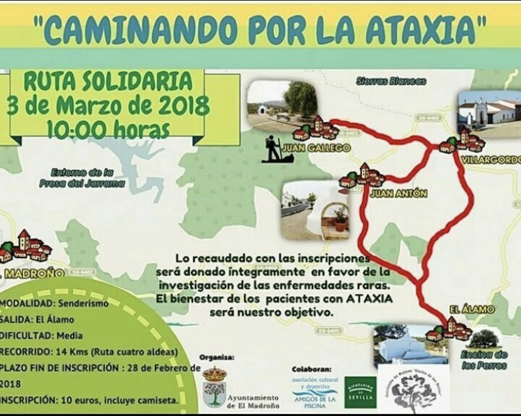
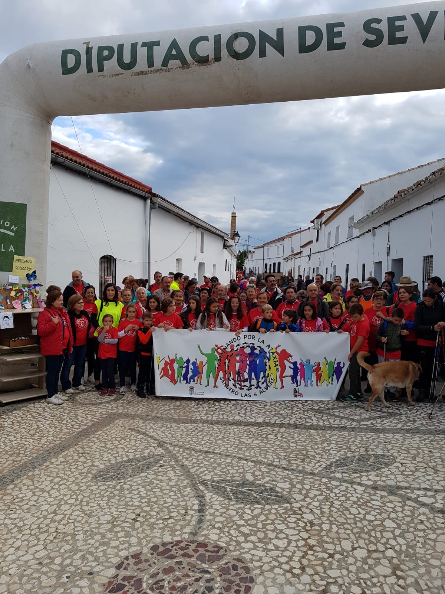
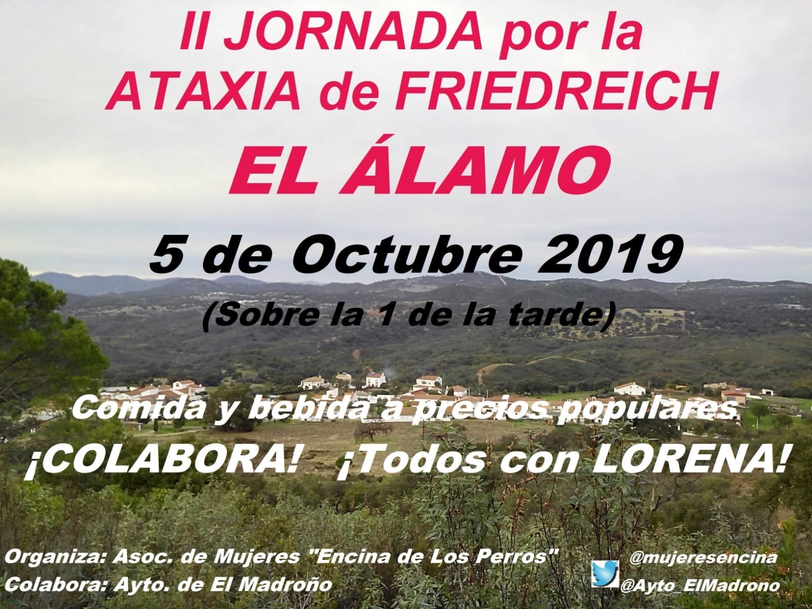
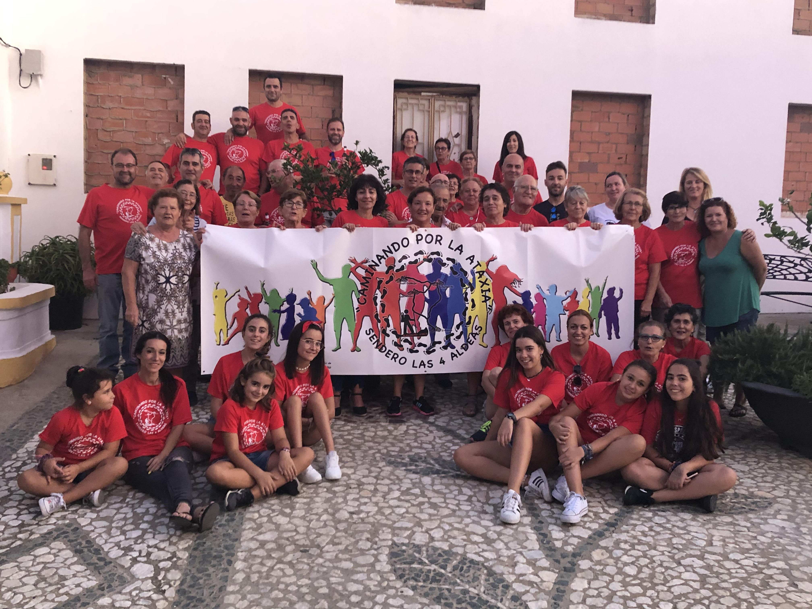

MI HISTORIA
Cuando era pequeña yo era una niña sin problemas, corría, saltaba, al igual que las niñas de mi edad. Un día con 11 años estando en el sofá de mi casa con mi padre haciendome cosquillas se da cuenta de que tengo desviación en la columna. Me llevan a la pediatra y me deriva al traumatólogo, la cita tarda y viendo que mi columna va cada vez más desviada mis padres me llevan al Hospital Macarena por urgencias, me dejan ingresada un día me atiende el Dr.Rovira y dice que tengo una escoliosis "de caballo", me derivó a su consulta y me recetaron un corset. Estuve dos años con el y cada vez que ibamos a la consulta mi madre le decía que mi forma de andar no era normal. Él le decia que estaba obsesionada pero de todas formas me derivó al neurólogo, Dr.Rodríguez Sacristan. Este me hizo bastantes pruebas genéticas, pero no dio nada. Mis padres estaban preocupados porque mi columna se desviaba más hasta con corset y el Dr.Rovira decía que había que esperar. Mi madre preocupada por mi estado ya que tenía que tener un atril en el cole y me veía sufrir con ese aparato puesto decidió pedir una segunda opinión y nos vamos al Virgen del Rocio a la consulta del Dr.Farrington, y este dice que por mi estado del la espalda hay que operar ya,no se puede esperar más y el 14 de julio del 2015 me operan de escoliósis. Una operación que duró 8 horas y media. Mi madre le pide que me vea un neurólogo, compañero de él alli en Virgen del Rocio, me cita el Dr.Madruga en octubre y después de hacerme un buen estudio pide hacerme la prueba de genética sobre la Ataxia de Friedreich y da con la tecla. Desde entonces me ve en cardiologia, neurología, traumatoloía, rehabilitación y nutrición.
MI DIA A DIA
AQUI OS PONGO LOS EVENTOS QUE MI FAMILIA HEMOS HECHO PARA CONSEGUIR DINERO
|  |  | Conseguimos 7.800€ |
|  |  | Conseguimos 3.012€ |
| ANÓNIMO | Donó 6.000€ |